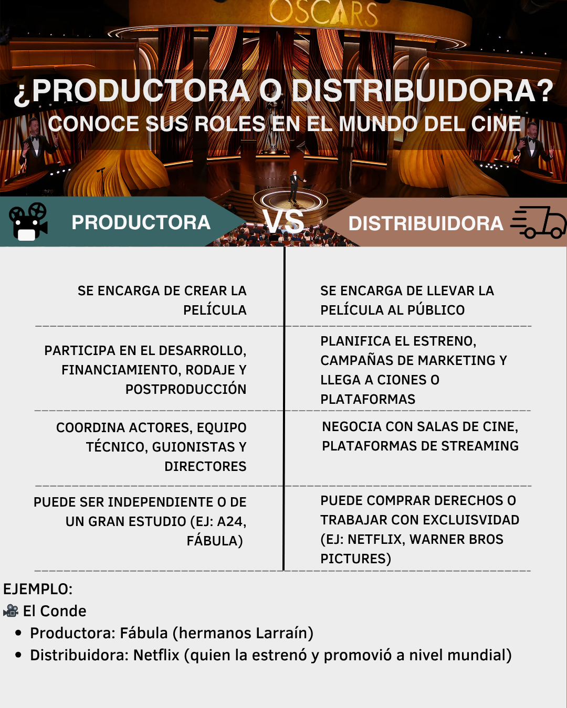

Este nuevo modelo ha tomado a la industria cinematográfica por sorpresa: lo que antes era dominio exclusivo de los grandes estudios de Hollywood ahora se comparte con plataformas que invierten miles de millones en crear películas y series, muchas de ellas pensadas para competir en la temporada de premios. La presencia creciente del streaming en los galardones ha alterado para siempre la dinámica del cine tradicional.
Aunque estas producciones originales reciben críticas por priorizar la rapidez y la cantidad sobre la profundidad, su popularidad sigue en aumento y su posición en los premios se fortalece. Mientras el cine clásico mantiene su prestigio, el auge del streaming está configurando un nuevo futuro para la industria audiovisual. A pesar de su constante presencia en el escenario tradicional, surge la pregunta: ¿están las plataformas de streaming destronando a las distribuidoras tradicionales?
1997: Se funda Netflix como un servicio de arriendo de DVDs por correo.
2007: Netflix lanza su servicio de streaming, introduciendo el modelo de suscripción de contenido en línea bajo demanda..
2013: Netflix lanza su primera producción original: House of Cards.
2014: Primera nominación al Oscar de Netflix: El documental egipcio The Square fue nominado a Mejor Documental.
2017: Netflix gana su primer Oscar con The White Helmets y Amazon gana dos premios con Manchester by the Sea.
2020: Apple TV+ gana su primer Oscar por The Elephant Queen.
2021: Apple TV+ recibe su primera nominación conWolfwalkers.
2022: Apple TV+ gana Mejor Película con CODA.
2023: Disney+ logra su primera nominación con Le Pupille.
2024: Netflix iguala en nominaciones a estudios tradicionales en varias categorías clave.
Para lograr comprender como funciona la industria del cine es necesario saber que llevar a cabo una película es un proceso complejo que combina creatividad, técnica, organización y colaboración. Detrás de cada historia existe un camino extenso que comienza desde una idea inicial y se transforma en una experiencia cinematográfica completa. Este recorrido está compuesto de cinco etapas. ¡Descúbrelas!
Todo comienza en base a una idea o guión. En este punto se define la historia, se escribe el guion, se hacen ajustes creativos y se debe buscar financiamiento.
Una vez aprobado el guion, se planifica todo: se contratan actores y equipo técnico, se eligen locaciones, se preparan escenarios y vestuario, y se organiza el calendario de grabación.
Es la etapa de rodaje. Las cámaras graban las escenas bajo la dirección del director. Participan actores, iluminación, sonido, dirección de arte, todo bajo un calendario de trabajo.
Se edita el material, se corrige el color, se incorpora música, efectos de sonido y visuales. Luego, se hace la mezcla final (sound mix) para obtener la versión definitiva.
La película se presenta a distribuidores que coordinan su estreno en cines, plataformas o televisión. Se define la estrategia de marketing, las fechas y el público objetivo.
Este trabajo involucra a cientos de personas: directores, guionistas, técnicos, editores, músicos, productores, y puede tardar años. Comprender este proceso nos permite valorar más lo que vemos en pantalla. ¡Dale play al siguiente video para ver el proceso completo en acción!
Para ver si es que el streaming está realmente destronando a los estudios cinematográficos tradicionales en los Premios Óscar, es necesario hacer una distinción importante entre quienes producen y quienes distribuyen las películas. En este caso nosotros nos centramos en el rol que tienen las plataformas de streaming para distribuir los contenidos audiovisuales.

Los Premios Oscar, entregados por la Academia de Artes y Ciencias Cinematográficas, son los galardones más prestigiosos del cine a nivel mundial. Pero ¿cómo se decide quién gana una estatuilla dorada? A continuación, te explicamos el proceso completo, desde las nominaciones hasta la votación final.
Los Oscar no los decide un jurado secreto ni el público. Todo el proceso está a cargo de la Academia, una organización con más de 9.000 miembros profesionales de la industria del cine. Estos miembros están agrupados en ramas específicas según su área: actores, directores, guionistas, diseñadores de vestuario, músicos, etc.
Durante esta fase, cada rama de la Academia nomina dentro de su especialidad. Por ejemplo:
Hay una excepción importante: la categoría “Mejor Película”, en la que todos los miembros de la Academia pueden participar proponiendo sus candidatas.
Una vez definidas las nominaciones, se abre la segunda etapa. Aquí, todos los miembros votan en todas las categorías para decidir quién gana cada Oscar.
Tipos de votación:
No cualquier película puede aspirar a un Oscar. Para ser considerada, debe cumplir ciertas condiciones, como:
La Academia está compuesta por profesionales activos o retirados de la industria cinematográfica. Algunas de las ramas más influyentes son:
Cada miembro vota en las fases según su especialidad y puede hacerlo de forma confidencial a través de una plataforma online segura.
Ganar un Oscar no implica un premio monetario directo, pero los beneficios son enormes y duraderos:
Para más información sobre cómo funcionan los Premios Óscar, te invitamos a ver este video:
Ahora veamos la evolución de la presencia de las plataformas de streaming en los Premios Óscar desde la invención de Netflix en 1997.
Como se puede observar en el gráfico, las victorias de los estudios tradicionales y de las plataformas de streaming se han mantenido similares y constantes a través de los años, mientras que las nominaciones de streaming han ido aumentando y, por el contrario, las de los estudios tradicionales han ido disminuyendo.
Ahora observemos las categorías en las que destacan las distribuidoras de streaming más importantes de las películas, siendo las principales Netflix y Prime Studios.
Este fenómeno está estrechamente ligado al auge del modelo OTT (Over the Top), que permite la distribución de contenido audiovisual a través de internet, sin necesidad de los canales tradicionales como la televisión por cable o las salas de cine. Estas plataformas ofrecen acceso 24/7, permiten consumir contenido en múltiples dispositivos y, mediante membresías, representan una forma legal y flexible de acceder a una larga oferta medial. Su capacidad para generar recomendaciones personalizadas a través de algoritmos basados en análisis de comportamiento ha transformado radicalmente las prácticas de consumo, especialmente en audiencias móviles.
El impacto de las OTT no se limita al público. También ha comenzado a transformar el modo en que se predicen y comprenden los premios. Un estudio publicado por la plataforma digital y base de datos Science Direct publicado en 2021 explora cómo el análisis de redes sociales y el aprendizaje automático pueden predecir a los ganadores del Óscar con cierto grado de precisión. Al analizar el comportamiento y las opiniones de los usuarios, los investigadores concluyen que el “ruido social” y las tendencias digitales podrían ser indicadores fiables de reconocimiento en la industria. La popularidad en línea, entonces, se convierte en una variable tan poderosa como las decisiones de la crítica o los votos académicos.
Las plataformas de streaming invierten en distintas categorías:
Contenido adquirido mediante acuerdo de licencia entre vendedor de contenido y plataforma OTT. El acuerdo otorga a los distribuidores derechos de ofrecer ese contenido a cambio de una división de ingresos. Normalmente la división se basa en horas de visualización, pero también pueden existir modelos de tarifa fija u otros.
Plataformas como Disney Plus, Netflix, HBO Max y Amazon Prime Video invierten cada vez más en adquirir o producir contenido original.
Ejemplos destacados:
Los términos de exclusividad varían:
Las plataformas OTT pueden ampliar su catálogo comprando directamente los derechos de activos individuales o bibliotecas completas. También pueden adquirir catálogos enteros mediante fusiones y adquisiciones (M&A).
Ejemplo: En 2022, Amazon adquirió MGM Studios, obteniendo derechos de:
Los siguentes gráficos muestran en que y cuanto invierten las plataformas de streaming y los estudios tradicionales
A través de las visualizaciones es posible comprobar que las nominaciones de películas distribuidas por plataformas de streaming han aumentado sostenidamente en los últimos años, mientras que las nominaciones de estudios tradicionales tienden a estabilizarse o disminuir. Las victorias, aunque más equilibradas, muestran un aumento progresivo para los estudios de streaming, indicando que no solo reciben más nominaciones, sino que también están ganando mayor reconocimiento. Esto comprueba nuestra hipótesis parcialmente, ya que, aunque las plataformas de streaming no están sobrepasando enormemente a los estudios tradicionales al nivel de destronarlos de su lugar en la industria del cine, sí hay una transformación significativa en cómo son vistos, donde el modelo de distribución digital ha ganado prestigio y aceptación crítica, además de audiencia.
Las plataformas principales como Netflix y Prime Studios lideran en nominaciones dentro de categorías clave, evidenciando su creciente influencia y calidad en contenidos competitivos para premios. El análisis por categorías revela que las plataformas de streaming destacan en áreas importantes como Mejor Película, Dirección y Guion, reforzando su posición como competidores serios frente a estudios históricos. El cambio en la dinámica tradicional se refleja también en la evolución del mercado audiovisual y en la inversión creciente que hacen estas plataformas en contenidos originales de alta calidad.
Las plataformas de streaming invierten grandes sumas en películas originales para ganar prestigio y atraer suscriptores. Aunque las películas requieren mucha inversión y tienen un ciclo de vida más corto que las series, siguen siendo clave para diferenciarse y consolidarse en la industria. Por eso, las plataformas están buscando un equilibrio, produciendo contenido original de manera más eficiente y combinándolo con otros formatos para mantener la rentabilidad y crecer de forma sostenible.
Aquí puedes buscar tu película, actor, actriz o director favorito y ver si ha ganado un Óscar y en qué año.